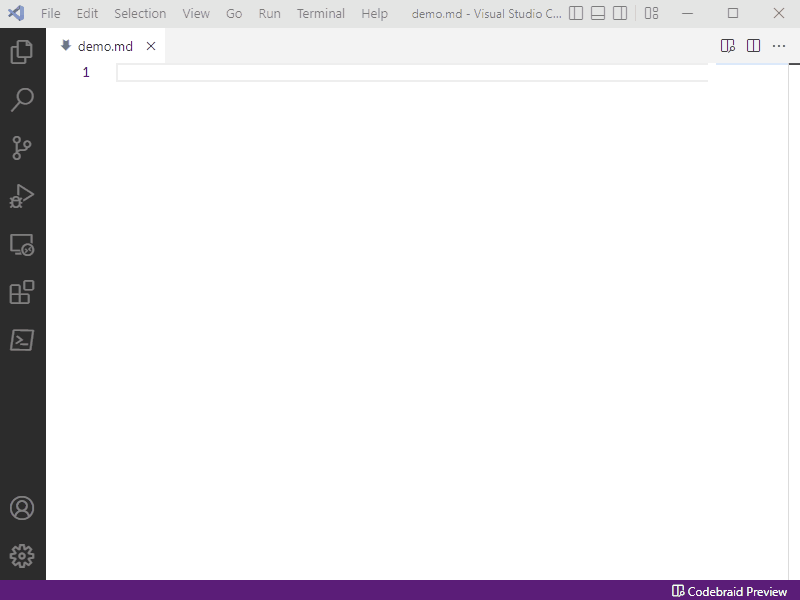

Getting Started
Installation
The codebraid command-line application is available from
PyPI. It can be installed via the
command line with pip3 install codebraid or pip install codebraid. It is
also available from conda-forge.
The development version from GitHub can
also be installed manually. After downloading the development version, run
python3 setup.py install or python setup.py install.
Additional requirements:
-
Pandoc – the latest version is usually best; minimum of v2.4+ but v2.17.1.1+ is recommended for
commonmark_x. -
For Jupyter support,
jupyter_clientv6.1.0+ and language kernels. -
For YAML metadata support,
ruamel.yaml(can beruamel_yamlfor Anaconda installations).
Building a document
Building a document using Codebraid is very similar to using Pandoc. In many
cases, just add codebraid in front of the command you would normally use for
running Pandoc.
Markdown source test.md:
```{.python .cb-run}
var = 'Hello from Python!'
var += ' $2^8 = {}$'.format(2**8)
```
```{.python .cb-run}
print(var)
```
Run codebraid:
codebraid pandoc --from markdown --to markdown test.md
Output:
Hello from Python! $2^8 = 256$
To save the output, add something like -o test_out.md to the command. Add
--overwrite if the output file already exists.
As this example illustrates, variables persist between code blocks; by default, all code for a given language is executed within a single process or session. Code output is also cached by default so that code is only re-executed when modified.
Editor support
There is an extension for VS Code and VSCodium. This provides a document preview with features like scroll sync between the Markdown source and the preview. The preview is generated with Pandoc itself, so all Pandoc extensions to Markdown syntax are fully supported. The extension also supports code execution, with visual indicators in the preview to show when cached code output is stale and when code is currently running. Code execution does not block the preview from updating; execution is decoupled from the preview process, so that the preview always remains live. For more information and examples, see the presentation for SciPy 2022.
